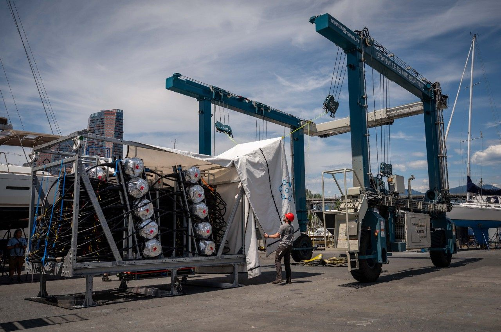
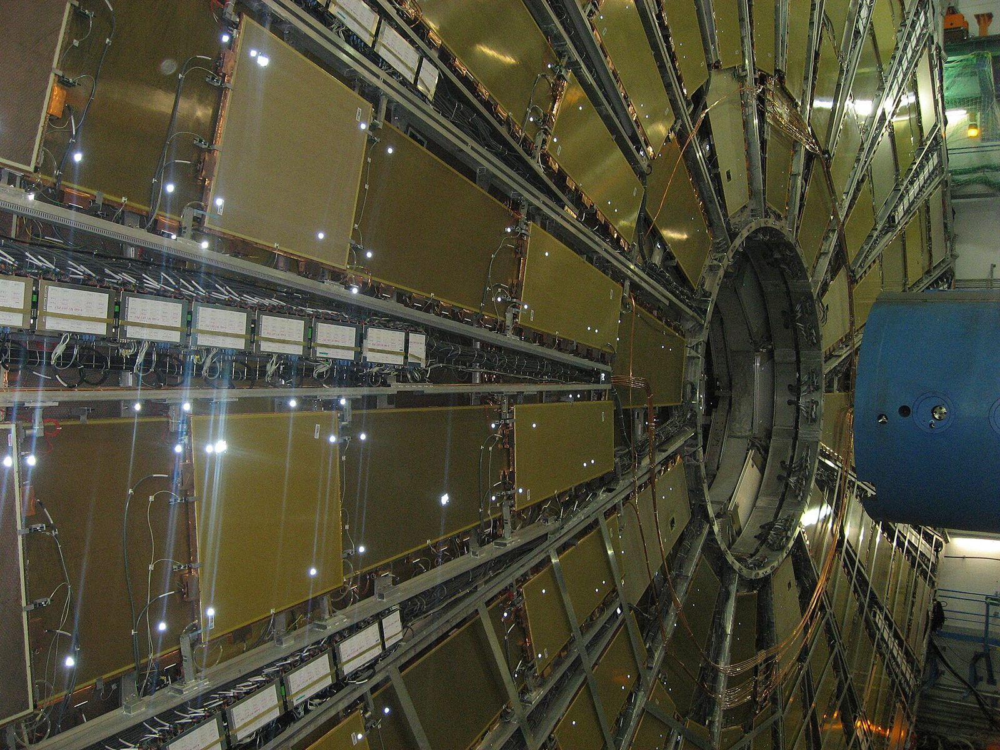

First P-ONE detector line prepared for deep-sea deployment
The first P-ONE line was assembled at TRIUMF and tested at Granville Island in June, ahead of deployment off Vancouver Island.
News
Detector milestones, discoveries and stories from SFU High Energy Physics and the experiments we work on.

The first P-ONE line was assembled at TRIUMF and tested at Granville Island in June, ahead of deployment off Vancouver Island.

The SFU and TRIUMF team will build about 100 of the 400 petals for the High-Luminosity LHC upgrade.
Photos: P-ONE line by Simon Fraser University. ATLAS muon chambers by Bernd Gross, CC BY-SA 4.0, via Wikimedia Commons.
Selected news from the ATLAS experiment at CERN, including progress on the new Inner Tracker that SFU helps build.
Teams at SLAC loaded detector modules onto the first production ring of the Inner Tracker's pixel system.
The first nine production petals were installed in an ITk Strips endcap at DESY, starting full-scale integration.
A massive shielding component was moved across CERN's site, the first major transport of the shutdown for the High-Luminosity LHC.
New physics results presented at the International Conference on High Energy Physics.
A three-week "quiet" run gives a clearer view of W-boson decays.
Highlights from the annual Moriond conferences.
Celebrating the contributions of PhD students across the experiment.
ATLAS records its first-ever collisions of oxygen and neon ions.
Selected news from the IceCube Neutrino Observatory at the South Pole, where SFU's Darren Grant served as spokesperson.
Honoured for decisive contributions to IceCube and the discovery of high-energy neutrinos from space.
Combining neutrino and gamma-ray data to study how particles at the centre of the Milky Way reach extreme energies.
Looking for the source of the highest-energy neutrino candidate ever reported, seen by KM3NeT at 220 PeV.
What the newly deployed Upgrade will add to the hunt for neutrino sources.
A five-year, $53 million agreement keeps IceCube running from 2026 to 2031.
Fourteen years of data, from 2008 to 2022, made public for anyone searching for neutrino sources.
Southern-sky data point to active galaxies like NGC 1068 as neutrino sources.
Five new, densely instrumented strings with more than 600 sensors and calibration instruments are now in the ice.
News from the international P‑ONE collaboration, which SFU's Matthias Danninger leads as spokesperson.
The first detector line passed its final shallow-water test before deployment.
P-ONE-1 was integrated and tested in the TRIUMF cleanroom and is ready for deployment.
Remembering Dr. Roger Moore of the University of Alberta.
SFU's Matthias Danninger served first as Deputy Spokesperson before taking over the role in 2026.
An NSF Major Research Instrumentation grant funds the trigger system.
Pathfinder instruments were shipped to Germany for checks.
The project's initiator becomes its first spokesperson.
Funding to develop and deploy the first three P-ONE strings.
STRAW pathfinder data show the seafloor site is well suited to a neutrino telescope.
The proposal for a neutrino telescope in the Pacific Ocean is announced.
Ocean Networks Canada installs the STRAW pathfinder moorings.
Students in the group analyze data, build detectors and learn large-scale computing.
.JPG){kind=link}